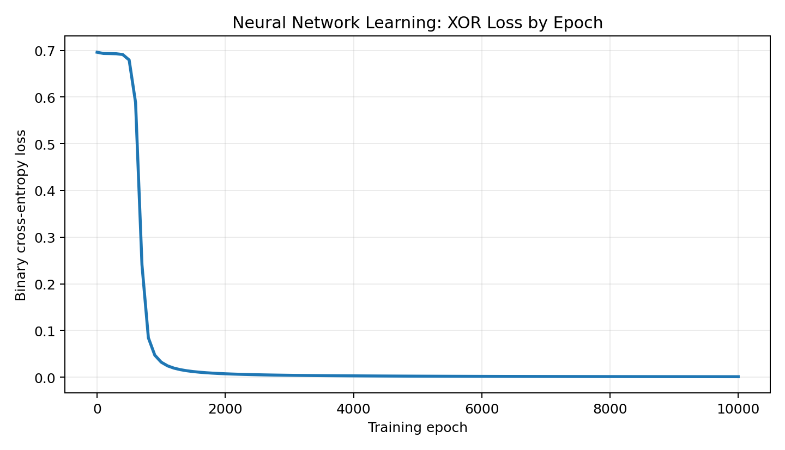

Workshop context
Workshop Three explored how faith and resilience support adaptation, how neural networks learn, how change leadership depends on communication, and how synthetic media can create ethical risks.
A reproducible Python demonstration of how a small artificial neural network learns from feedback, adjusts internal weights, and improves its predictions over repeated training cycles.
Workshop Three explored how faith and resilience support adaptation, how neural networks learn, how change leadership depends on communication, and how synthetic media can create ethical risks.
The lab was created for instructors, classmates, and technical reviewers who want visible evidence that I understand the learning process rather than only recognizing model definitions.
The XOR pattern cannot be solved by a single linear rule. A hidden layer is needed, making it a small but meaningful example of how neural networks learn nonlinear relationships.
The project connects model training with validation thinking: define expected behavior, control the inputs, record the loss, inspect outputs, and avoid treating a successful demo as proof of production readiness.
The code uses NumPy rather than a deep-learning framework so the main learning steps remain visible. A two-input, four-hidden-neuron, one-output network performs forward propagation, calculates binary cross-entropy loss, applies backpropagation, and updates weights over 10,000 epochs.

| Input A | Input B | Expected | Predicted probability | Class |
|---|---|---|---|---|
| 0 | 0 | 0 | 0.0008 | 0 |
| 0 | 1 | 1 | 0.9991 | 1 |
| 1 | 0 | 1 | 0.9989 | 1 |
| 1 | 1 | 0 | 0.0009 | 0 |
def sigmoid(values):
return 1.0 / (1.0 + np.exp(-values))
for epoch in range(EPOCHS + 1):
hidden = sigmoid(inputs @ weights_hidden + bias_hidden)
predictions = sigmoid(hidden @ weights_output + bias_output)
loss = binary_cross_entropy(targets, predictions)
output_error = predictions - targets
grad_weights_output = hidden.T @ output_error / len(inputs)
hidden_error = (output_error @ weights_output.T) \
* sigmoid_derivative(hidden)
weights_output -= LEARNING_RATE * grad_weights_output
weights_hidden -= LEARNING_RATE * grad_weights_hiddenThis result confirms that the small network learned the four controlled examples. It does not establish fairness, robustness, or suitability for a real application. Production use would require representative data, independent validation, security review, monitoring, explainability appropriate to the risk, and human accountability. GAN-generated synthetic data or deepfakes would also require clear labeling and controls against impersonation or misleading content.
This lab helped me see that neural-network learning is a process of adjustment rather than instant intelligence. The first predictions are weak because the weights begin without useful knowledge. Through repeated feedback, the network measures its error and changes the weights until the pattern becomes clearer. This mirrors the way people and leaders adapt to new realities: progress requires patience, honest feedback, willingness to change an unsuccessful approach, and confidence that improvement can occur through disciplined effort.
Writing the training steps in Python strengthened my understanding of activation functions and backpropagation because I could see how each calculation affected the final result. I also learned not to confuse a low loss on four examples with real-world readiness. A model may work technically and still create ethical or operational harm if the data is weak, the output is deceptive, or leaders ignore human review. My next step is to compare this basic ANN with a framework-based model and add validation data so I can examine generalization instead of only training performance.